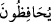

geliyorsa veya kadı fâsık ise ya da kabul edilmeyeceğini biliyorsa kişinin şâhidliğini
gizlemesi câizdir.
Fethu’r-Rahmân isimli eserde şöyle denir: Bir şeye şâhid oluvermek, farz-ı kifâyedir.
Başka kimse yoksa o şâhidliği yerine getirmek farz-ı ayn’dır. Şâhidlik sebebiyle
dâvâcıdan ücret almak, ittifakla helâl değildir. Dâvâcı, şâhidlik yapmasını ister ve şâhid
de kadıya yakın olursa, onun yanına yürüyerek gitmesi gerekir. Eğer yarım günlük
mesâfeden daha uzak ise şâhidlik yapmak üzere gelmediği takdirde günaha girmez.
Çünkü zarara uğrayacaktır. Şâhid yürüyebilecek durumda iken dâvâcı onu kendi
hesabından herhangi bir binite bindirecek olursa, o şâhidin şâhidliği kabul edilmez.
Ama yürüyemeyecek durumda olduğu için bindirdiyse bunda herhangi bir sakınca
yoktur. Ebû Hanife (r.a.)’e göre şâhidlik konusunda müslümanın zâhiren âdil görülmesi;
yâni büyük günahları işlemeyip küçüğünde ısrarlı olmaması, iyiliklerinin günahlarından
fazla bulunması yeterlidir, ancak had ve kısasta bu kadarı kâfi değildir. Ayrıca şâhidin
gizlice araştırılması gerekir. Hasım taraf şâhidi itham edecek olursa hâkim o şâhid
hakkında gizli soruşturma yaptırır. Ebû Hanîfe’nin iki büyük talebesine göre ise bütün
hak davalarında hâkim, şâhidleri gizli ve açık olarak araştırır. Fetvâ da bu görüşe göre
verilmektedir.
Bâzı âlimler âyette geçen “şâhidlik” kavramına tevhid şâhidliğinin de dâhil olduğunu
söylemişlerdir. Nitekim Sehl (rh.) âyet-i kerîmeyi şöyle anlamıştır: Onlar “Lâ ilâhe
illallah” şehâdetiyle şâhidlik ettikleri husûsu muhâfaza ederler, fiilleri, sözleri ve
hâllerinden hiçbir şeyle O’na şirk koşmazlar.
Kâşânî ise bu âyet-i kerîme hakkında şöyle der: Onlar ilimdeki şâhidlerinin gereği ile
amel ederler. Şâhid oldukları bütün şeylerin hükmünü de yerine getirir ve şâhidlikleri
sâdece şâhidleri olan ilmin hükmüne göre sâdır olur, başka değil.
34. Namazlarını koruyanlar;
“
/namazlarını” kelimesinin “
/muhâfaza ederler” fiilinden önce
getirilmesi, -dilbilgisi kuralları açısından- bir ihtisâs ifâde eder ve şuna delâlet eder:
Onların muhâfazaları ve titizlikleri sâdece namazlarınadır, bunun dışındaki dünya
işlerine ulaşmaz. Yâni onlar namazlarının şartlarına riâyet ederler, farzlarını,
sünnetlerini, müstehablarını ve âdâbını tam ve mükemmel olarak yerine getirirler.
Günah işlemek sûretiyle namazlarını boşa çıkmaktan muhâfaza ederler.
Daha evvel zikredilen “namaza devam ederler” ifâdesi namazların bizâtihî
kendileriyle ilgili iken burada zikredilen “muhâfaza”, namazların hâlleriyle alâkalıdır.
Müfredât isimli eserde deniyor ki: Bu âyet-i kerîmede onların, namazların vakitlerine,
rükünlerine riâyet ederek ve güçleri yettiğince namazlarını kılarak onları muhâfaza